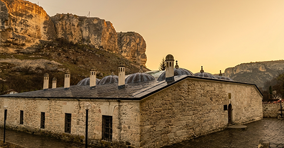

Бахчисарай (в переводе с крымскотатарского — «Дворец-сад») — это не просто город, это подлинная
историческая столица Крымского ханства, сохранившая свой неповторимый колорит.
Наше путешествие логично начать не с самого Ханского дворца, а с места, откуда пошел Бахчисарай —
исторического предместья Салачик. В Салачике. Зынджырлы-медресе — одно из старейших учебных заведений
Восточной Европы, основанное ханом Менгли I Гераем в 1500 году. Название переводится как
«Медресе с цепью»: над входом в здание висит тяжелая железная цепь, заставляющая каждого входящего,
независимо от его статуса и богатства, склонить голову перед величием знаний.
Ханский дворец. Возведенный в начале XVI века при хане Сахибе I Герае, Хансарай является единственным
в мире образцом крымскотатарской дворцовой архитектуры. Архитектурная философия дворца воплощает
мусульманское представление о райском саде на земле.
Мемориальный дом-музей выдающегося просветителя, политика и издателя конца XIX — начала XX века
Исмаила Гаспринского. Именно в Бахчисарае Гаспринский начал издавать газету «Терджиман» («Переводчик»),
которая стала рупором джадидизма — движения за обновление исламской культуры и образования светских наук.
«Ашлама-Сарай» в Бахчисарае — это не просто кафе, а полноценный туристический объект, который
гармонично сочетает гастрономию, архитектуру и атмосферу крымско-татарской культуры. Расположенное
в историческом центре города, оно стало популярным пунктом в туристических маршрутах, благодаря
своей крымско-татарской атмосфере.

Зынджырлы-медресе

Ханский дворец

Ресторан «Ашлама-сарай»